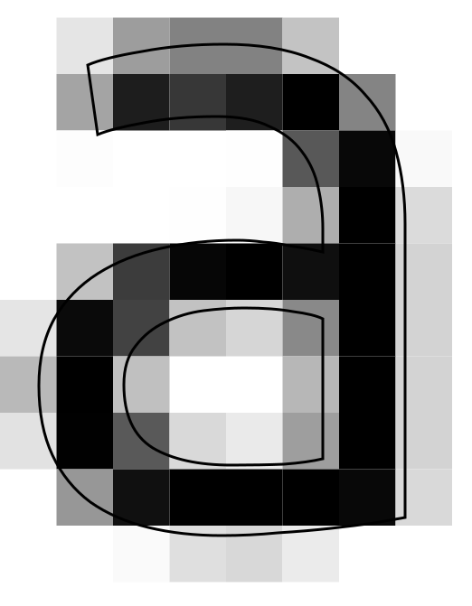

Outline and bitmap (monochrome) rendering with no hinting
Font: Arial Unicode · Font size: 12 px (12 PPEM) · Hinting: off


Outline and bitmap (monochrome) rendering with hinting
Font: Arial Unicode · Font size: 12 px (12 PPEM) · Hinting: on (blue dotted outline + bitmap)

Outline and bitmap (grayscale) rendering without and with hinting
Font: Arial Unicode · Font size: 12 px (12 PPEM) · Hinting: off (left) and on (right)

View of the glyphs structure and metrics